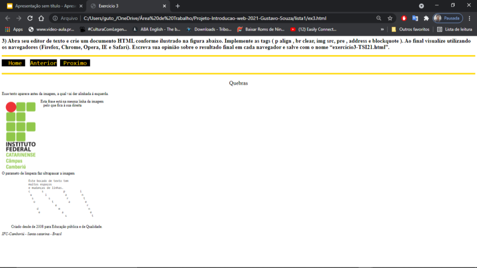
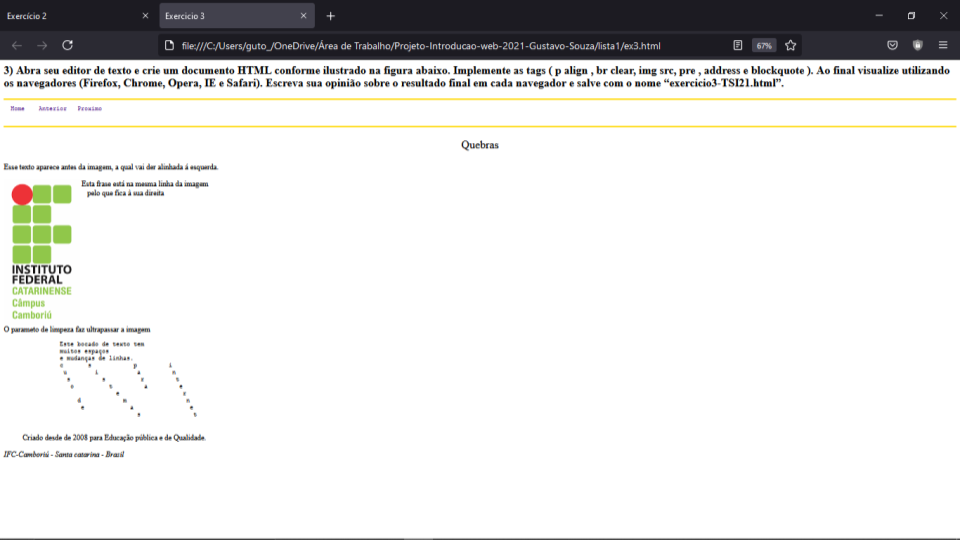
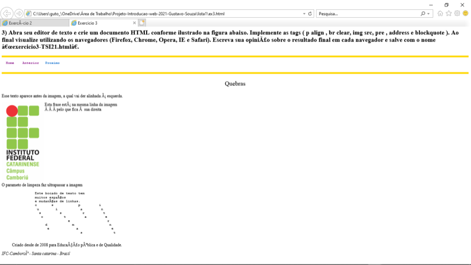

Esta frase está na mesma linha da imagem
Esta frase está na mesma linha da imagempelo que fica à sua direita
O parameto de limpeza faz ultrapassar a imagem
Home Anterior Proximo
Quebras
Esse texto aparece antes da imagem, a qual vai der alinhada á esquerda.
Esta frase está na mesma linha da imagem
pelo que fica à sua direita
O parameto de limpeza faz ultrapassar a imagem
Este bocado de texto tem
muitos espaços
e mudanças de linhas.
c s p i
u i a n
s s r t
o t a e
e r
d m n
e a e
s t
Criado desde de 2008 para Educação pública e de Qualidade.IFC-Camboriú - Santa catarina - Brasil
 |
|  |
 |
|  |
 |
|  |